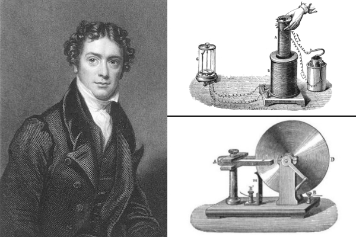

Michael Faraday Biografía
29-05-2023
Michael Faraday (/'ma?k?l 'fæ???de?/; Newington Butt, 22 de septiembre de 1791-Hampton Court, 25 de agosto de 1867) fue un científico británico que estudió el electromagnetismo y la electroquímica. Sus principales descubrimientos incluyen la inducción electromagnética, el diamagnetismo y la electrólisis.

Michael Faraday de Joven
A pesar de la escasa educación formal recibida, Faraday es uno de los científicos más influyentes de la historia.
Mediante su estudio del campo magnético alrededor de un conductor por el que circula corriente continua, fijó las bases para el desarrollo del concepto de campo electromagnético. También estableció que el magnetismo podía afectar a los rayos de luz y que había una relación subyacente entre ambos fenómenos.
Descubrió asimismo el principio de inducción electromagnética, el diamagnetismo, las leyes de la electrólisis e inventó algo que él llamó dispositivos de rotación electromagnética, que fueron los precursores del actual motor eléctrico.
En el campo de la química, Faraday descubrió el benceno, investigó el clatrato de cloro, inventó un antecesor del mechero de Bunsen, el sistema de números de oxidación e introdujo términos como ánodo, cátodo, electrodo e ion. Finalmente, fue el primero en recibir el título de Fullerian Professor of Chemistry en la Royal Institution de Gran Bretaña, que ostentaría hasta su muerte.
Comentarios (0)